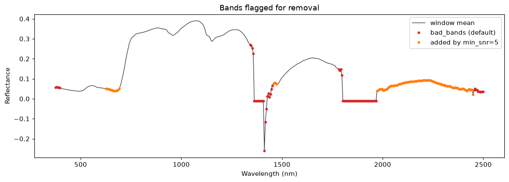
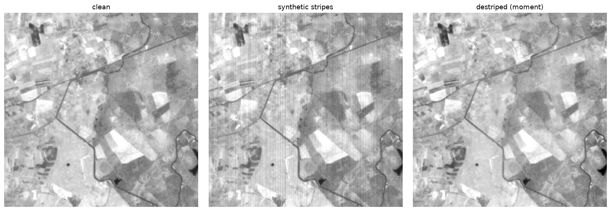
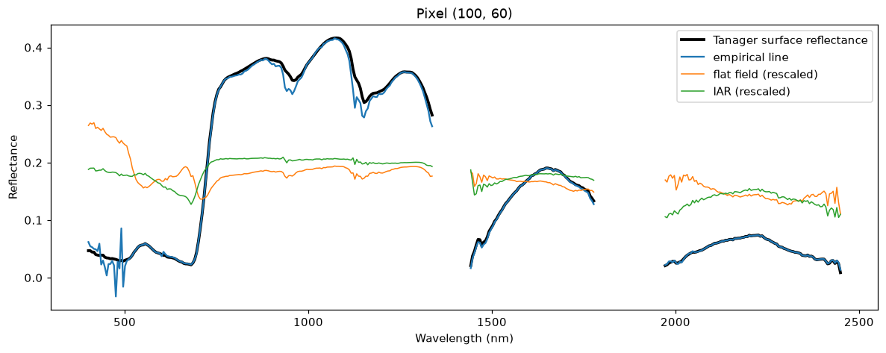
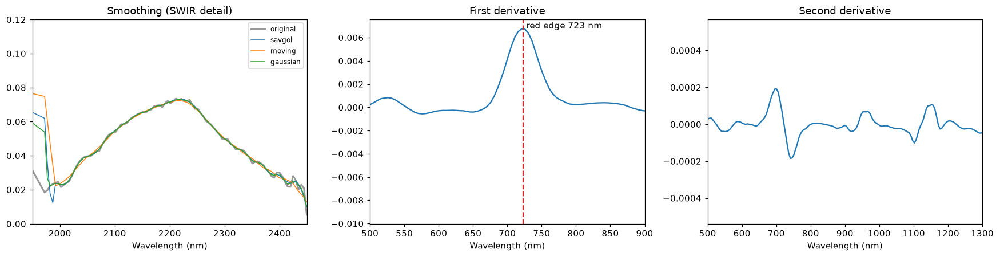
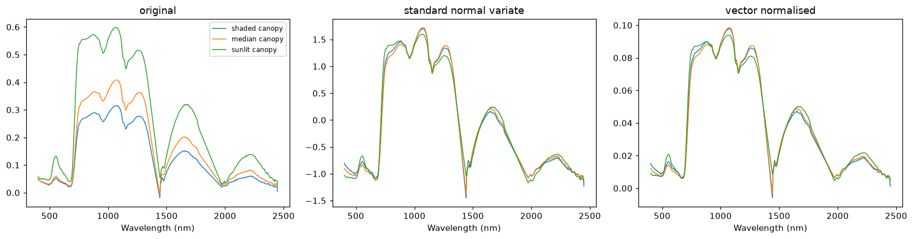

Before any analysis a hyperspectral cube needs cleaning: bands inside atmospheric absorption windows carry no surface signal, pushbroom detectors leave stripes, clouds and water must be masked, radiance must become reflectance, and spectra are often smoothed, differentiated, normalised or continuum removed to bring out absorption features. This notebook works through each step on real Tanager and OHS data with geolattice.rsense.hyperspectral, checks the results against the products’ own uncertainty and cloud layers, and ends by simulating Sentinel-2 bands from a Tanager cube.
Overview
Bad bands
Three groups of bands are usually removed: the opaque water vapour windows near 1400 and 1900 nm (and beyond about 2450 nm), the ends of the range where detector response and solar irradiance are low (below about 400 nm), and individual bands that are noisy, saturated or mostly fill. Products often ship a good band list; checking SNR and NaN fractions catches the rest.
Noise and SNR
Noise in imaging spectrometers is a mix of photon (shot) noise, which grows with signal, and detector and readout noise, which does not. Two image based estimates are common: the shift difference method assumes neighbouring pixels share the same signal, so their difference is noise (it overestimates noise in textured scenes); the residual method predicts each band from its spectral neighbours by regression and takes the residual (Roger and Arnold 1996), which is robust to spatial texture.
Striping
Each column of a pushbroom image is seen by one detector element. Small differences in gain and offset between elements show up as along track stripes. Moment matching scales every column to the band’s global mean and standard deviation; it assumes each column sees, on average, the same mix of surfaces, which holds for long swaths.
Masks
Clouds, cloud shadow, water and saturated pixels distort statistics and endmembers. Simple reflectance rules (bright and spectrally flat in the visible for cloud, NDWI for water, dark NIR for shadow) work as a first pass; mission cloud masks, which use the 1380 nm cirrus band and spectral tests, are better when available.
Radiance to reflectance
Physics based atmospheric correction (ISOFIT, ATCOR, FLAASH, the Tanager processor) is the norm. Without it, scene based approximations are still useful:
Empirical line: a linear fit per band between image values and field measured reflectance of at least two targets (dark and bright). Accurate near the targets’ conditions.
Flat field: divide every pixel by the spectrum of a bright, spectrally flat area.
Internal Average Relative (IAR): divide by the scene mean spectrum. Removes the solar and atmospheric shape but leaves the scene average’s own features in every spectrum.
Spectral transforms
Smoothing (Savitzky Golay, moving average, Gaussian) reduces band to band noise at the cost of some spectral resolution.
Derivatives remove baselines and sharpen features: the first derivative peaks at the red edge inflection; the second derivative locates absorption minima.
Normalisation (standard normal variate, vector norm, brightness) removes overall brightness differences caused by illumination and topography, keeping shape.
Continuum removal divides a spectrum by its convex hull, so absorption features become dips below 1 that can be compared across samples (Clark and Roush 1984). Band depth, position, width and asymmetry summarise one feature.
Spectral resampling
Convolving a hyperspectral spectrum with the spectral response functions of a multispectral sensor simulates that sensor. This links field and satellite spectroscopy, creates training data for Sentinel-2 or Landsat models and lets products from different sensors be compared.
Preprocessing with GeoLattice
Learning objectives
Flag bad bands with hs.bad_bands and compare them with the product’s good band list.
Estimate per band noise with the shift and residual methods and compare it with Tanager’s reflectance uncertainty.
Measure and remove detector striping with hs.destripe.
Build cloud, water and shadow masks with hs.quality_mask and check them against the product cloud mask.
Convert radiance to reflectance with the empirical line, flat field and IAR methods and judge them against the surface reflectance product.
Smooth, differentiate, normalise and continuum remove spectra, and map absorption band depth.
Simulate Sentinel-2 bands with hs.resample_to_sensor.
Data
Dataset
Use
Tanager agriculture scene (surface reflectance, radiance, uncertainty)
Bad bands, noise, calibration, transforms, resampling
Tanager agriculture basic radiance swath
Striping in sensor geometry
Tanager fire scene (Malibu, December 2024)
Cloud and water masks
Tanager energy and mining scene (Permian Basin)
Continuum removal and band depth
OHS sample scene (Spain)
Striping in a filter based sensor
Contents
Setup
Bad bands
Noise and signal to noise ratio
Detector striping
Cloud, water and shadow masks
From radiance to reflectance
Smoothing, derivatives and normalisation
Continuum removal and band depth
Simulating multispectral sensors
Summary and exercises
Setup
Installation. This notebook needs installation option 5 (core, spatial analysis, spatial statistics, geostatistics and remote sensing): pip install "geolattice[remote-sensing]". See “Installation options” in the GeoLattice README.
Code
import warnings # warning controlwarnings.filterwarnings("ignore") # hide routine library warningsfrom pathlib import Path # file pathsimport numpy as np # arraysimport pandas as pd # tablesimport matplotlib.pyplot as plt # figuresimport geolattice # GeoLatticefrom geolattice.rsense import hyperspectral as hs # hyperspectral cubes, readers and toolsplt.rcParams.update({"figure.dpi": 110}) # figure resolutionDATA = Path("../../../../Data/08_remote_sensing/08_05_HyperSpectral") # data folder next to this notebookTANAGER = DATA /"Tanger"# Planet Tanager sample scenesOUT = Path("outputs") # results written by this notebookOUT.mkdir(exist_ok=True) # create it if neededdef tanager_file(category, product="sr"):"""Path of a Tanager product (sr or radiance) for a scene category folder."""returnnext((TANAGER / category).glob(f"*/*_ortho_{product}_hdf5.h5"))print("GeoLattice", geolattice.__version__) # library version used for this notebook
GeoLattice 0.3.49
Bad bands
A 200 by 200 pixel window of the agriculture scene (forest, river and fields) is used for most of the notebook.
Code
WIN = (slice(250, 450), slice(300, 500)) # rows and columnssr = hs.read_tanager(tanager_file("agriculture"), window=WIN) # surface reflectance, all bandswl = hs.wavelengths(sr) # band centres (nm)bad = hs.bad_bands(sr) # default rules: water vapour windows, < 400 nm, NaN or constant bands, product flagsprint("bands:", sr.sizes["band"], "| product flags bad:", int((~sr["good"].values).sum()),"| bad_bands flags:", int(bad.sum()))extra = bad & sr["good"].values # flagged by bad_bands but good in the productprint("extra bands:", np.round(wl[extra][:6], 1), "...", np.round(wl[extra][-6:], 1))
noisy = hs.bad_bands(sr, min_snr=5) # also drop bands with a simple SNR below 5print("with min_snr=5:", int(noisy.sum()), "bands flagged")mean = sr.mean(("y", "x")).values # window mean spectrumfig, ax = plt.subplots(figsize=(13, 4))ax.plot(wl, mean, color="0.3", lw=1, label="window mean")ax.plot(wl[bad], mean[bad], "o", ms=3, color="C3", label="bad_bands (default)")ax.plot(wl[noisy &~bad], mean[noisy &~bad], "o", ms=3, color="C1", label="added by min_snr=5")ax.set(xlabel="Wavelength (nm)", ylabel="Reflectance", title="Bands flagged for removal")ax.legend()plt.show()clean = hs.drop_bad_bands(sr) # remove the default bad bandsprint("clean cube:", clean.shape)
with min_snr=5: 191 bands flagged

clean cube: (350, 200, 200)
The product’s own list removes the two opaque water vapour windows. bad_bands adds the bands below 400 nm and beyond 2450 nm, where the spectrum turns noisy (notebook 09_05_00), and a few at the edge of the 1400 nm window. The SNR threshold is far more aggressive here: it removes the red chlorophyll absorption (about 620 to 700 nm) and nearly the whole SWIR beyond 1970 nm, simply because this forest window is dark there and the simple SNR in band_stats counts forest texture as noise. A threshold of 5 is therefore too strict for this scene; check what a rule removes before applying it.
Noise and signal to noise ratio
Tanager ships a per pixel, per band reflectance uncertainty. Its median over the window is a useful reference for the two image based noise estimates.
All three curves rise at the edges of the water vapour windows and towards 2500 nm, where the signal is weakest. The shift difference estimate sits more than ten times above the product uncertainty because neighbouring forest pixels genuinely differ (texture counts as noise). The residual method, which uses only spectral neighbours, follows the product’s error model in the SWIR and falls below it in the VNIR, where neighbouring 5 nm bands are so strongly correlated that part of the noise is predictable from them; its median is about 0.8 times the product value. Use the residual method, or the product uncertainty when it exists, to set SNR thresholds or MNF noise models.
Detector striping
Striping is easiest to judge in sensor geometry, where every column is one detector element. Stripes make neighbouring columns differ more than neighbouring rows, so the ratio of the mean absolute difference across track to the mean absolute difference along track is a simple measure: about 1 for an image without stripes, above 1 with stripes. (Comparing column means is not a good check, because moment matching sets them all equal by construction.)
Code
def anisotropy(img):"""Mean |difference| between neighbouring columns divided by that between neighbouring rows."""returnfloat(np.nanmean(np.abs(np.diff(img, axis=1))) / np.nanmean(np.abs(np.diff(img, axis=0))))swath = hs.read_tanager(DATA /"20250224_145149_32_4001_basic_radiance_hdf5.h5", wavelength_range=(2100, 2300))swath = swath.rename(line="y", sample="x") # destripe works on the column (x) axisohs = hs.read_ohs(next((DATA /"10m_OH2_Hyperspectral_Sample/Spanish-OHS").iterdir()), bands=[5, 14, 27], window=(slice(1500, 3500), slice(1500, 3500))) # sensor geometryohs = ohs.rename(line="y", sample="x")rows = []for name, c in {"Tanager swath (2100 to 2300 nm)": swath, "OHS bands 5, 14, 27": ohs}.items(): d = hs.destripe(c) # moment matching per column before = np.mean([anisotropy(c.values[b]) for b inrange(c.sizes["band"])]) # mean over bands after = np.mean([anisotropy(d.values[b]) for b inrange(c.sizes["band"])]) rows.append({"image": name, "anisotropy before": before, "after destripe": after})pd.DataFrame(rows).round(4)
image
anisotropy before
after destripe
0
Tanager swath (2100 to 2300 nm)
1.0755
1.0578
1
OHS bands 5, 14, 27
1.0062
1.0087
Both L1 products are already well calibrated. The Tanager swath has a small across track excess (about 7 percent), which destriping reduces; the OHS bands have none, and destriping changes them very little. Destriping an image that does not need it only risks removing real differences between columns. To see what the method can do, the next cell adds synthetic stripes (a random gain of about 3 percent per column) to the OHS 866 nm band and removes them again.
Code
rng = np.random.default_rng(0)clean = ohs.isel(band=[2]) # OHS band 27 (866 nm)gain =1+ rng.normal(0, 0.03, clean.sizes["x"]) # one gain per detector columnstriped = clean * gain[None, None, :] # striped copyfixed = hs.destripe(striped) # moment matchingmed = hs.destripe(striped, method="median") # median matchingtab = pd.DataFrame({k: {"anisotropy": anisotropy(v.values[0]),"RMSE to clean (DN)": float(np.sqrt(np.nanmean((v.values - clean.values) **2)))}for k, v in {"clean": clean, "striped": striped, "destriped (moment)": fixed,"destriped (median)": med}.items()}).Tdisplay(tab.round(3))fig, axes = plt.subplots(1, 3, figsize=(15, 5))lo, hi = np.nanpercentile(clean.values, [2, 98]) # common stretchfor ax, (t, v) inzip(axes, [("clean", clean), ("synthetic stripes", striped), ("destriped (moment)", fixed)]): ax.imshow(v.values[0, :600, :600], cmap="gray", vmin=lo, vmax=hi) # 600 x 600 pixel detail ax.set_title(t); ax.axis("off")plt.tight_layout()plt.show()
anisotropy
RMSE to clean (DN)
clean
0.996
0.000
striped
1.664
4.765
destriped (moment)
1.000
8.998
destriped (median)
1.069
6.301

The synthetic stripes are obvious and raise the anisotropy from 1.0 to about 1.7. Moment matching brings it back to the clean value and the stripes disappear from the image, but the RMSE against the clean band goes up, not down. Every column is forced to the same mean and standard deviation, yet in this 20 km window some columns genuinely cross more reservoir or more bright fields than others; those real differences are flattened too. Median matching keeps more of them and ends between the two. Destriping removes visible stripes, but it is a cosmetic and statistical correction that can bias absolute values. Apply it to long swath segments, preferably with gains from the instrument’s calibration, and do not apply it to data that show no stripes.
Cloud, water and shadow masks
The fire scene over Malibu has a patch of cloud above the ocean. hs.quality_mask needs only the 450, 560, 650 and 860 nm bands (plus 1380 nm for cirrus), so only those are read.
Code
fire = tanager_file("fire")probe = hs.read_tanager(fire, window=(slice(0, 1), slice(0, 1))) # wavelengths onlyidx = [hs.band_index(probe, w) for w in (450, 560, 650, 860, 1380)]few = hs.read_tanager(fire, bands=idx) # five bands of the whole sceneqm = hs.quality_mask(few) # cloud, water, shadow, saturated, valid (default cloud_blue=0.25)qm10 = hs.quality_mask(few, cloud_blue=0.10) # a lower blue threshold for thin cloudanc = hs.read_tanager_ancillary(fire) # product masksprod_cloud = (anc["beta_cloud_mask"] ==1) | (anc["beta_cirrus_mask"] ==1)inside = np.isfinite(few.isel(band=0)).values # pixels inside the swathours = qm["cloud"].values.astype(bool)agree = pd.crosstab(pd.Series(prod_cloud.values[inside], name="product cloud"), pd.Series(ours[inside], name="quality_mask cloud"))print("default:", {k: int(qm[k].values[inside].sum()) for k in ["cloud", "water", "shadow", "saturated", "valid"]})print("cloud_blue=0.10: cloud", int(qm10["cloud"].values[inside].sum()), "| product cloud + cirrus:", int(prod_cloud.values[inside].sum()))agree
The thin cloud over the ocean is easy to see in true colour, yet none of the masks flags it. The product’s beta cloud and cirrus masks mark only 36 pixels in the whole scene, and the default rule (blue reflectance above 0.25) marks 94. Under the cloud the rules see pixels that are no longer water (the cloud raises the NIR) but are not bright enough for cloud, so they end up as “other”, fringed by “shadow”. Lowering the blue threshold to 0.10 does not help: it flags the white surf line and beaches instead. The water and shadow rules themselves work (ocean against land, steep shaded slopes in the mountains). Thin cloud over dark water is a known weak point of simple tests; a scene specific rule, such as treating non water pixels inside the open ocean as suspect, works better here. Use product masks where they work, add rules where they do not, and always look at the result.
From radiance to reflectance
The radiance product of the same window is converted with three scene based methods and compared with Planet’s surface reflectance. For the empirical line, two pixels (the darkest and brightest in the NIR) play the role of field targets, with the surface reflectance product standing in for field spectra.
Code
rad = hs.read_tanager(tanager_file("agriculture", "radiance"), window=WIN) # W m-2 sr-1 um-1nir = hs.band_at(sr, 860).valuesdark = np.unravel_index(np.nanargmin(nir), nir.shape) # darkest NIR pixel (water)bright = np.unravel_index(np.nanargmax(nir), nir.shape) # brightest NIR pixeltargets = {name: ((slice(r -1, r +2), slice(c -1, c +2)), sr.values[:, r -1:r +2, c -1:c +2].mean((1, 2)))for name, (r, c) in {"dark": dark, "bright": bright}.items()} # (window, "field" spectrum)el, coefs = hs.empirical_line(rad, targets) # per band gain and offsetff = hs.flat_field(rad, targets["bright"][0]) # divide by the bright targetiar = hs.iar_reflectance(rad) # divide by the scene meanprint("dark pixel", dark, "| bright pixel", bright)coefs.iloc[[40, 97, 250, 365]].round(5)
dark pixel (np.int64(116), np.int64(115)) | bright pixel (np.int64(4), np.int64(17))
wavelength
gain
offset
r2
40
575.82001
0.00227
-0.03067
1.0
97
861.26001
0.00358
-0.00440
1.0
250
1627.66003
0.01451
-0.00026
1.0
365
2201.21997
0.05207
0.00026
1.0
Code
good = sr["good"].values & (wl >400) & (wl <2450) # well-behaved bandstruth = sr.values[good].reshape(good.sum(), -1) # product reflectance, (bands, pixels)def mean_angle(e, t):"""Mean spectral angle (degrees) between estimated and true spectra (columns are pixels).""" ok = np.all(np.isfinite(e), 0) & np.all(np.isfinite(t), 0) cos = (e[:, ok] * t[:, ok]).sum(0) / (np.linalg.norm(e[:, ok], axis=0) * np.linalg.norm(t[:, ok], axis=0))returnfloat(np.degrees(np.arccos(np.clip(cos, -1, 1))).mean())rows = []for name, est in [("empirical line", el), ("flat field", ff), ("IAR", iar)]: e = est.values[good].reshape(good.sum(), -1) ok = np.isfinite(e) & np.isfinite(truth) rows.append({"method": name, "output": "reflectance"if name =="empirical line"else"relative","RMSE (reflectance)": float(np.sqrt(np.mean((e[ok] - truth[ok]) **2))) if name =="empirical line"else np.nan,"mean spectral angle to product (deg)": mean_angle(e, truth)})pd.DataFrame(rows).round(4)
method
output
RMSE (reflectance)
mean spectral angle to product (deg)
0
empirical line
reflectance
0.0087
1.9529
1
flat field
relative
NaN
40.5616
2
IAR
relative
NaN
33.9701
Code
r, c =100, 60# a test pixel away from the two targetsfig, ax = plt.subplots(figsize=(13, 4.5))ax.plot(wl, np.where(good, sr.values[:, r, c], np.nan), lw=2.5, color="k", label="Tanager surface reflectance")ax.plot(wl, np.where(good, el.values[:, r, c], np.nan), label="empirical line")for name, est in [("flat field", ff), ("IAR", iar)]: v = np.where(good, est.values[:, r, c], np.nan) ax.plot(wl, v * np.nanmean(sr.values[:, r, c][good]) / np.nanmean(v[good]), lw=1, label=f"{name} (rescaled)")ax.set(xlabel="Wavelength (nm)", ylabel="Reflectance", title=f"Pixel ({r}, {c})")ax.legend()plt.show()

With two targets the line through them fits exactly (the r2 of 1 in the coefficient table is trivial), but it also predicts all other pixels closely: an RMSE below 0.01 and a spectral angle of about 1 to 2 degrees, because the atmosphere over a 6 km window is nearly uniform and one gain and offset per band describe it. Flat field and IAR spectra are only relative and inherit the shape of their reference: divided by a bright vegetated target or by the forest dominated scene mean, the test pixel loses its red edge and looks nearly flat, which shows up as a spectral angle of tens of degrees. These methods are fallbacks when no atmospheric correction is available, for example for laboratory or drone data.
Smoothing, derivatives and normalisation
Code
cl = sr.isel(band=np.flatnonzero(good)) # well-behaved bands onlyveg_rc = np.unravel_index(np.nanargmax(hs.index(cl, "NDVI").values), nir.shape) # most vegetated pixelspec = cl.isel(y=[veg_rc[0]], x=[veg_rc[1]]) # 1 x 1 cube keeps every function usablesm = {m: hs.smooth(spec, method=m, window=9) for m in ("savgol", "moving", "gaussian")}d1 = hs.derivative(spec, 1, window=9) # first derivative (per nm)d2 = hs.derivative(spec, 2, window=11) # second derivativefig, axes = plt.subplots(1, 3, figsize=(16, 4.2))w = hs.wavelengths(spec)axes[0].plot(w, spec.values.ravel(), color="0.6", lw=2, label="original")for m, s in sm.items(): axes[0].plot(w, s.values.ravel(), lw=1, label=m)axes[0].set(xlim=(1950, 2450), ylim=(0, 0.12), title="Smoothing (SWIR detail)", xlabel="Wavelength (nm)")axes[0].legend(fontsize=8)axes[1].plot(w, d1.values.ravel()); axes[1].set(xlim=(500, 900), title="First derivative", xlabel="Wavelength (nm)")rep =float(hs.red_edge_position(spec).values.ravel()[0]) # red edge inflectionaxes[1].axvline(rep, color="C3", ls="--"); axes[1].text(rep +5, axes[1].get_ylim()[1] *0.9, f"red edge {rep:.0f} nm")axes[2].plot(w, d2.values.ravel()); axes[2].set(xlim=(500, 1300), title="Second derivative", xlabel="Wavelength (nm)")plt.tight_layout()plt.show()

All three smoothers reduce band to band noise in the far SWIR; Savitzky Golay keeps narrow features best, a moving average flattens them most. The first derivative turns the red edge into a peak whose position, the red edge inflection, is a chlorophyll and stress indicator (notebook 09_05_04). The second derivative marks curvature changes such as the shoulders of absorption features.
Code
import xarray as xr # labelled arrays, to pick pixels by indexndvi = hs.index(cl, "NDVI").values # narrowband NDVI of the windowforest = np.flatnonzero(ndvi.ravel() >0.85) # dense canopy pixelsX = cl.values.reshape(cl.sizes["band"], -1) # (bands, pixels)order = np.argsort(X[hs.band_index(cl, 860), forest]) # sort canopy pixels by NIR brightnesspick = forest[order[[5, len(order) //2, -5]]] # dark, median and bright canopytrio = xr.DataArray(X[:, pick][:, None, :], dims=("band", "y", "x"), coords={"wavelength": ("band", hs.wavelengths(cl))})fig, axes = plt.subplots(1, 3, figsize=(15, 4))for ax, (title, c) inzip(axes, [("original", trio), ("standard normal variate", hs.snv(trio)), ("vector normalised", hs.normalize(trio))]):for i, lab inenumerate(["shaded canopy", "median canopy", "sunlit canopy"]): ax.plot(hs.wavelengths(c), c.values[:, 0, i], lw=1, label=lab) ax.set(title=title, xlabel="Wavelength (nm)")axes[0].legend(fontsize=8)plt.tight_layout()plt.show()

Three dense canopy pixels differ mostly in brightness, because of slope and canopy shadow. After the standard normal variate (each spectrum centred and scaled) or vector normalisation the curves almost coincide, leaving only the small differences in shape that carry biochemical information.
Continuum removal and band depth
The Permian Basin scene is bare caliche and sandy soil with oil and gas pads. Clays absorb near 2200 nm (Al-OH) and carbonates near 2340 nm (CO₃). Continuum removal over 2000 to 2450 nm makes both features visible; hs.band_depth maps them.
Code
em = hs.read_tanager(tanager_file("energy-mining"), window=(slice(400, 650), slice(350, 600)), wavelength_range=(1950, 2460))em = em.isel(band=np.flatnonzero(em["good"].values)) # good SWIR bandsem_s = hs.smooth(em, window=7) # light smoothing helps feature depth on 5 nm bandscr, hull = hs.continuum_removal(em_s, start=2000, stop=2450, return_hull=True) # ratio to the convex hullr0, c0 =120, 120# one pixelfig, axes = plt.subplots(1, 2, figsize=(14, 4.2))axes[0].plot(hs.wavelengths(em_s), em_s.values[:, r0, c0], label="spectrum")axes[0].plot(hs.wavelengths(hull), hull.values[:, r0, c0], "--", label="convex hull")axes[0].set(title="SWIR spectrum and its continuum", xlabel="Wavelength (nm)", ylabel="Reflectance"); axes[0].legend()axes[1].plot(hs.wavelengths(cr), cr.values[:, r0, c0])for w, t in [(2200, "Al-OH 2200"), (2340, "CO3 2340")]: axes[1].axvline(w, color="0.5", ls=":"); axes[1].text(w +4, float(cr.values[:, r0, c0].min()), t, fontsize=8)axes[1].set(title="Continuum removed", xlabel="Wavelength (nm)", ylabel="Relative to continuum")plt.tight_layout()plt.show()
The continuum removed spectrum shows the clay and carbonate features as shallow dips of 2 to 3 percent; the deepest dip, near 2010 nm, is residual CO₂ absorption from the atmosphere, not a mineral. The depth maps follow the landscape: well pads and roads, built from crushed caliche (calcium carbonate), stand out as a grid of dots and lines in the carbonate map, while the clay map follows field and soil boundaries. The histograms of feature position are the quality check. Clay minima cluster tightly at about 2205 nm. Carbonate minima split between about 2345 nm, the real feature, and the right end of the window near 2390 nm, where noise and the falling continuum create spurious minima; depths at those pixels mean little. Mineral mapping proper, with library matching, follows in notebook 09_05_06.
Simulating multispectral sensors
hs.resample_to_sensor convolves the cube with Gaussian approximations of a sensor’s band responses and returns a Dataset with canonical band names (blue, red, nir, swir16, …), the same names geolattice.rsense.optical uses.
Simulated Sentinel-2 NDVI is almost identical to the narrowband NDVI (r = 1.000, on the 1:1 line): red and NIR reflectance are flat enough across the band widths that averaging changes little. NDRE is different. Sentinel-2’s red edge band 5 (704 nm, 15 nm wide) sits on the steep slope of the red edge, and the simulated index runs well above the narrowband version, with more scatter (r = 0.988). Indices built on steep parts of the spectrum change systematically with band width and position. Models trained on hyperspectral data should therefore be applied to multispectral data only after resampling the training spectra, never with the narrowband formulas.
Summary and exercises
Key points
Remove the opaque water vapour bands and the noisy ends of the range; an SNR threshold catches more, at the cost of bands.
Noise estimates differ by method: the residual method is closest to Tanager’s own uncertainty; the shift difference method mistakes texture for noise.
Pushbroom striping lives in sensor geometry. Column moment matching removes visible stripes but can raise absolute error; the Tanager and OHS L1 data here barely need it.
Simple reflectance rules separate water, land and shadow, but neither they nor the beta product mask catch thin cloud over the ocean: inspect masks, do not trust them blindly.
With uniform atmosphere an empirical line from two targets reproduces surface reflectance well; flat field and IAR give only relative spectra.
Smoothing, derivatives, normalisation and continuum removal each bring out different parts of a spectrum; band depth maps turn absorption features into mineral or biochemical maps.
Resampling to a multispectral sensor changes index values; resample before transferring models.